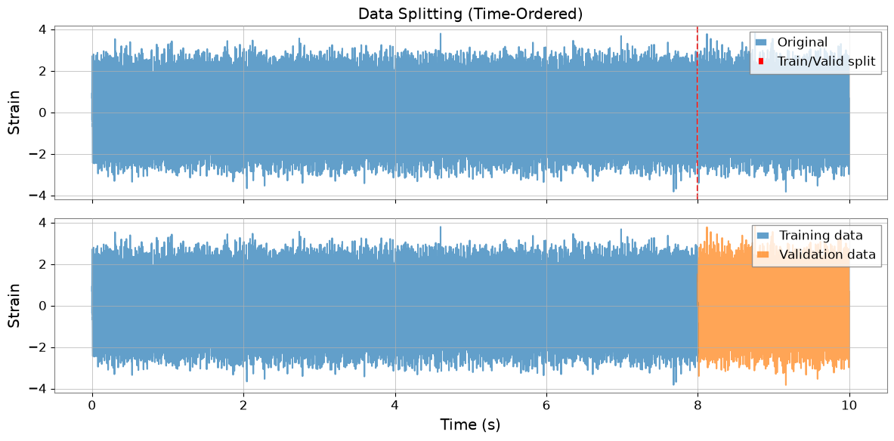
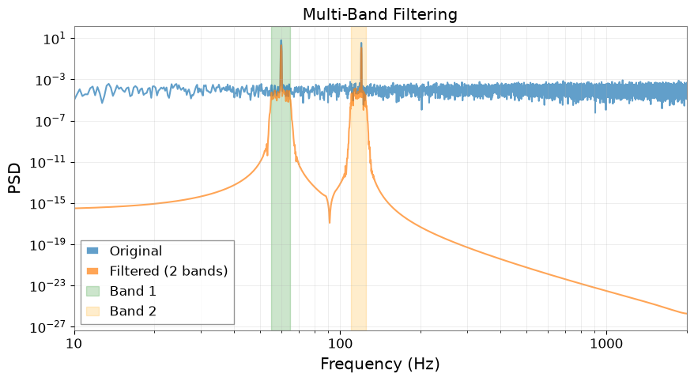
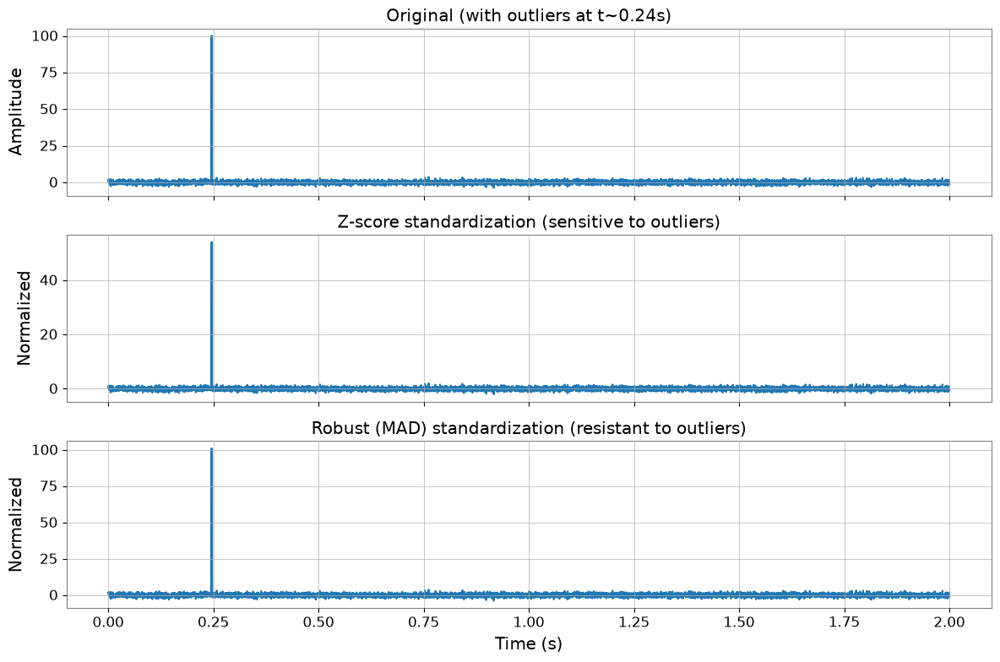

Case Study: ML Preprocessing Pipeline#
The MLPreprocessor class provides a scikit-learn-style transformer API for preprocessing gravitational-wave data for machine learning applications. It implements the preprocessing pipeline used in DeepClean v2, including:
Data splitting: Time-ordered train/validation split with integer-second alignment
Bandpass filtering: Butterworth filter with multiple frequency bands
Standardization: Channel-wise normalization (Z-score or robust MAD-based)
This preprocessing is applicable to any machine learning model (DeepClean, Random Forest, XGBoost, etc.), not just deep learning.
Related API: Preprocessing API, Time Series API
Related theory: Validated Algorithms, Numerical Stability
import warnings
warnings.filterwarnings("ignore", category=UserWarning)
warnings.filterwarnings("ignore", category=DeprecationWarning)
import warnings
with warnings.catch_warnings():
warnings.simplefilter('ignore')
# Suppress warnings for cleaner documentation output
import matplotlib.pyplot as plt
import numpy as np
from gwexpy.signal.preprocessing import MLPreprocessor
from gwexpy.timeseries import TimeSeries, TimeSeriesMatrix
Basic Usage#
Let’s create some dummy data representing auxiliary (witness) channels and a target strain channel.
# Generate dummy data
np.random.seed(42)
sample_rate = 4096 # Hz
duration = 10 # seconds
n_samples = sample_rate * duration
n_channels = 3
# Witness channels (auxiliary sensors)
witnesses = TimeSeriesMatrix(
np.random.randn(n_channels, n_samples) * 10 + 50, # Different mean/std
t0=0,
dt=1 / sample_rate,
unit="m/s^2",
channel_names=["SEIS-X", "SEIS-Y", "SEIS-Z"],
)
# Target strain channel with 60Hz noise
t = np.arange(n_samples) / sample_rate
signal_60hz = 2 * np.sin(2 * np.pi * 60 * t)
strain = TimeSeries(
signal_60hz + np.random.randn(n_samples) * 0.5,
t0=0,
dt=1 / sample_rate,
unit="strain",
name="H1:GDS-CALIB_STRAIN",
)
print(f"Witnesses shape: {witnesses.shape}")
print(f"Strain length: {len(strain)}")
print(f"Duration: {duration} seconds")
Witnesses shape: (3, 1, 40960)
Strain length: 40960
Duration: 10 seconds
Preprocessing Pipeline#
The typical workflow is:
split(): Divide data into train/validation sets
fit(): Learn statistics and filter coefficients from training data
transform(): Apply preprocessing to train/validation data
Axis-order note: in this notebook, witness inputs X stay in GWexpy’s channel-first order (n_channels, 1, n_samples). Many ML libraries expect batch-major tensors later, so transpose only at the dataset/model boundary and keep the preprocessing steps in the original axis order.
# Create preprocessor with 55-65 Hz bandpass filter
preprocessor = MLPreprocessor(
sample_rate=sample_rate,
freq_low=[55.0],
freq_high=[65.0],
valid_frac=0.2, # 20% validation
standardization_method="zscore",
)
# Split data
X_train, y_train, X_valid, y_valid = preprocessor.split(witnesses, strain)
print(f"Training samples: {len(y_train)} ({len(y_train)/sample_rate:.1f}s)")
print(f"Validation samples: {len(y_valid)} ({len(y_valid)/sample_rate:.1f}s)")
Training samples: 32768 (8.0s)
Validation samples: 8192 (2.0s)
# Fit on training data
preprocessor.fit(X_train, y_train)
# Transform both train and validation
X_train_proc, y_train_proc = preprocessor.transform(X_train, y_train)
X_valid_proc, y_valid_proc = preprocessor.transform(X_valid, y_valid)
print(f"Processed train X shape: {X_train_proc.shape}")
print(f"Processed train y length: {len(y_train_proc)}")
print(f"Output units: X={X_train_proc.units[0,0]}, y={y_train_proc.unit}")
Processed train X shape: (3, 1, 32768)
Processed train y length: 32768
Output units: X=, y=
Data Splitting Visualization#
The split is time-ordered (first portion for training, last for validation) with integer-second alignment to match DeepClean v2 behavior.
fig, axes = plt.subplots(2, 1, figsize=(12, 6), sharex=True)
# Plot original strain
axes[0].plot(strain.times.value, strain.value, alpha=0.7, label="Original")
axes[0].axvline(
y_train.t0.value + len(y_train) * y_train.dt.value,
color="r",
linestyle="--",
label="Train/Valid split",
)
axes[0].set_ylabel("Strain")
axes[0].legend()
axes[0].set_title("Data Splitting (Time-Ordered)")
# Plot split data
axes[1].plot(
y_train.times.value, y_train.value, label="Training data", alpha=0.7, color="C0"
)
axes[1].plot(
y_valid.times.value, y_valid.value, label="Validation data", alpha=0.7, color="C1"
)
axes[1].set_xlabel("Time (s)")
axes[1].set_ylabel("Strain")
axes[1].legend()
plt.tight_layout()
plt.show()

Filtering and Standardization Effects#
Important:
Witness channels (X) are NOT filtered, only standardized
Target channel (y) is filtered THEN standardized
This follows DeepClean v2’s processing order.
fig, axes = plt.subplots(2, 2, figsize=(14, 8))
# Original witness channel (first 2 seconds)
time_mask = X_train.times.value < 2
axes[0, 0].plot(X_train.times.value[time_mask], X_train.value[0, 0, time_mask])
axes[0, 0].set_title("Witness (Original)")
axes[0, 0].set_ylabel(f"Amplitude ({X_train.units[0,0]})")
axes[0, 0].set_xlabel("Time (s)")
# Standardized witness (NO filtering)
axes[0, 1].plot(X_train_proc.times.value[time_mask], X_train_proc.value[0, 0, time_mask])
axes[0, 1].set_title("Witness (Standardized, No Filter)")
axes[0, 1].set_ylabel("Normalized amplitude")
axes[0, 1].set_xlabel("Time (s)")
# Original target
axes[1, 0].plot(y_train.times.value[time_mask[:len(y_train)]], y_train.value[time_mask[:len(y_train)]])
axes[1, 0].set_title("Target (Original)")
axes[1, 0].set_ylabel(f"Amplitude ({y_train.unit})")
axes[1, 0].set_xlabel("Time (s)")
# Filtered + standardized target
axes[1, 1].plot(y_train_proc.times.value[time_mask[:len(y_train_proc)]], y_train_proc.value[time_mask[:len(y_train_proc)]])
axes[1, 1].set_title("Target (55-65 Hz Filtered + Standardized)")
axes[1, 1].set_ylabel("Normalized amplitude")
axes[1, 1].set_xlabel("Time (s)")
plt.tight_layout()
plt.show()

Frequency Domain Analysis#
# Compute PSDs
fft_length = 4 # seconds
psd_original = y_train.psd(fftlength=fft_length)
psd_filtered = y_train_proc.psd(fftlength=fft_length)
plt.figure(figsize=(10, 5))
plt.loglog(psd_original.frequencies.value, psd_original.value, label="Original", alpha=0.7)
plt.loglog(psd_filtered.frequencies.value, psd_filtered.value, label="Filtered (55-65 Hz)", alpha=0.7)
plt.axvspan(55, 65, alpha=0.2, color="green", label="Filter band")
plt.xlabel("Frequency (Hz)")
plt.ylabel("PSD")
plt.title("Effect of Bandpass Filtering")
plt.legend()
plt.grid(True, which="both", alpha=0.3)
plt.xlim(10, 2000)
plt.show()

PyTorch Integration#
The preprocessed data can be used with TimeSeriesWindowDataset for deep learning models.
try:
import torch # noqa: F401
from gwexpy.interop import TimeSeriesWindowDataset
# Create dataset with 8-second windows, 0.0625-second stride
train_dataset = TimeSeriesWindowDataset(
X_train_proc,
labels=y_train_proc,
window=8 * sample_rate,
stride=int(0.0625 * sample_rate),
)
print(f"Dataset size: {len(train_dataset)} windows")
# Get a batch
x_batch, y_batch = train_dataset[0]
print(f"Batch shapes: X={x_batch.shape}, y={y_batch.shape}")
print(f"X dtype: {x_batch.dtype}")
print(f"y dtype: {y_batch.dtype}")
# Create DataLoader
from torch.utils.data import DataLoader
train_loader = DataLoader(train_dataset, batch_size=32, shuffle=True)
print(f"\nDataLoader created with {len(train_loader)} batches")
except ImportError:
from IPython.display import Markdown, display
display(Markdown("""**Note**: PyTorch is not installed.\n\nTo try this machine learning integration example:\n```bash\npip install torch\n```\n\nYou can continue with the rest of the notebook."""))
Note: PyTorch is not installed.
To try this machine learning integration example:
pip install torch
You can continue with the rest of the notebook.
Advanced Topics#
Multiple Frequency Bands#
You can filter multiple frequency bands simultaneously (results are summed).
# Add 120 Hz noise to original data
signal_120hz = 1.5 * np.sin(2 * np.pi * 120 * t)
strain_multi = TimeSeries(
signal_60hz + signal_120hz + np.random.randn(n_samples) * 0.5,
t0=0,
dt=1 / sample_rate,
unit="strain",
)
# Preprocessor with two bands
preprocessor_multi = MLPreprocessor(
sample_rate=sample_rate,
freq_low=[55.0, 110.0], # Two bands
freq_high=[65.0, 125.0],
valid_frac=0.2,
)
X_train_m, y_train_m, X_valid_m, y_valid_m = preprocessor_multi.split(
witnesses, strain_multi
)
preprocessor_multi.fit(X_train_m, y_train_m)
_, y_train_multi_proc = preprocessor_multi.transform(X_train_m, y_train_m)
print(f"Number of filter bands: {len(preprocessor_multi.filter_coeffs_)}")
# Compare PSDs
psd_multi_orig = y_train_m.psd(fftlength=4)
psd_multi_filt = y_train_multi_proc.psd(fftlength=4)
plt.figure(figsize=(10, 5))
plt.loglog(psd_multi_orig.frequencies.value, psd_multi_orig.value, label="Original", alpha=0.7)
plt.loglog(psd_multi_filt.frequencies.value, psd_multi_filt.value, label="Filtered (2 bands)", alpha=0.7)
plt.axvspan(55, 65, alpha=0.2, color="green", label="Band 1")
plt.axvspan(110, 125, alpha=0.2, color="orange", label="Band 2")
plt.xlabel("Frequency (Hz)")
plt.ylabel("PSD")
plt.title("Multi-Band Filtering")
plt.legend()
plt.grid(True, which="both", alpha=0.3)
plt.xlim(10, 2000)
plt.show()
Number of filter bands: 2

Robust Standardization#
For data with outliers, use robust (MAD-based) standardization instead of z-score.
# Create data with outliers
np.random.seed(0)
data_with_outliers = np.random.randn(n_channels, n_samples)
data_with_outliers[0, 1000:1010] = 100 # Inject outliers
witnesses_outliers = TimeSeriesMatrix(
data_with_outliers, t0=0, dt=1 / sample_rate, unit="m/s^2"
)
# Compare z-score vs robust
prep_zscore = MLPreprocessor(sample_rate=sample_rate, standardization_method="zscore")
prep_robust = MLPreprocessor(sample_rate=sample_rate, standardization_method="robust")
prep_zscore.fit(witnesses_outliers, y=None)
prep_robust.fit(witnesses_outliers, y=None)
X_zscore = prep_zscore.transform(witnesses_outliers, y=None)
X_robust = prep_robust.transform(witnesses_outliers, y=None)
# Plot comparison
fig, axes = plt.subplots(3, 1, figsize=(12, 8), sharex=True)
time_window = slice(0, 2 * sample_rate) # First 2 seconds
times = witnesses_outliers.times.value[time_window]
axes[0].plot(times, witnesses_outliers.value[0, 0, time_window])
axes[0].set_title("Original (with outliers at t~0.24s)")
axes[0].set_ylabel("Amplitude")
axes[1].plot(times, X_zscore.value[0, 0, time_window])
axes[1].set_title("Z-score standardization (sensitive to outliers)")
axes[1].set_ylabel("Normalized")
axes[2].plot(times, X_robust.value[0, 0, time_window])
axes[2].set_title("Robust (MAD) standardization (resistant to outliers)")
axes[2].set_ylabel("Normalized")
axes[2].set_xlabel("Time (s)")
plt.tight_layout()
plt.show()
print(f"Z-score: mean={np.mean(X_zscore.value[0]):.3f}, std={np.std(X_zscore.value[0]):.3f}")
print(f"Robust: median={np.median(X_robust.value[0]):.3f}, MAD*1.4826={np.median(np.abs(X_robust.value[0] - np.median(X_robust.value[0]))) * 1.4826:.3f}")

Z-score: mean=-0.000, std=1.000
Robust: median=-0.000, MAD*1.4826=1.000
Summary#
The MLPreprocessor provides:
Flexible preprocessing for any ML model (not just DeepClean)
DeepClean v2 compatibility with identical processing order
Easy integration with PyTorch, scikit-learn, XGBoost, etc.
Robust handling of edge cases (single channel, outliers, zero variance)
Key processing order:
Witness channels (X): Standardization only (no filtering)
Target channel (y): Filtering → Standardization
For more details, see the API documentation.
Related API: Preprocessing API, Time Series API
Related theory: Validated Algorithms, Numerical Stability